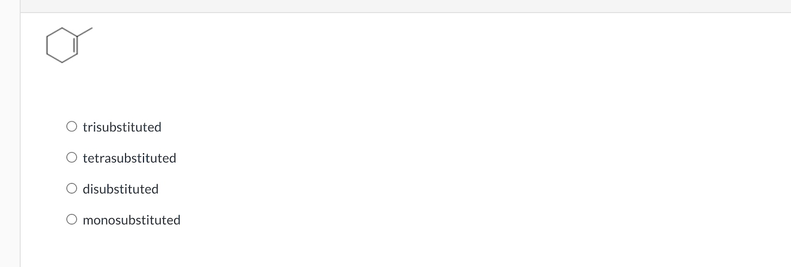
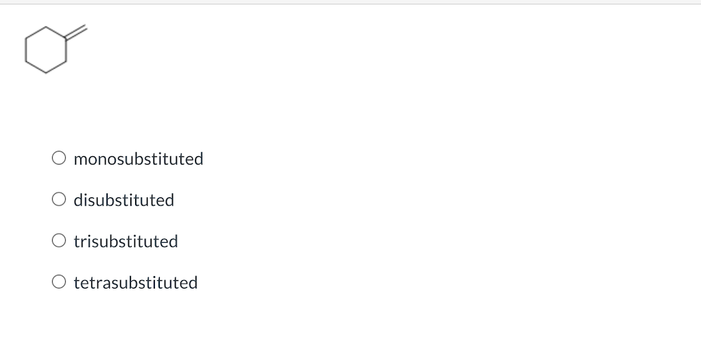
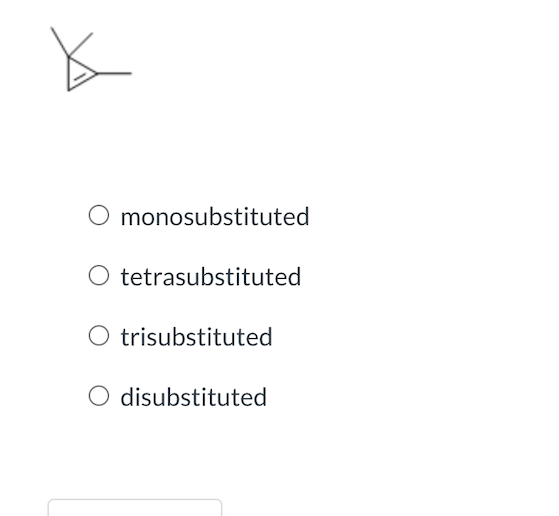
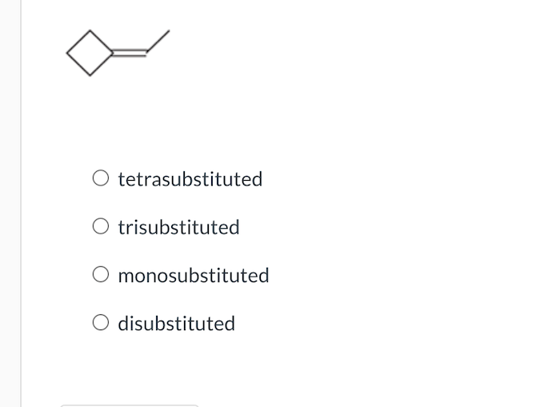
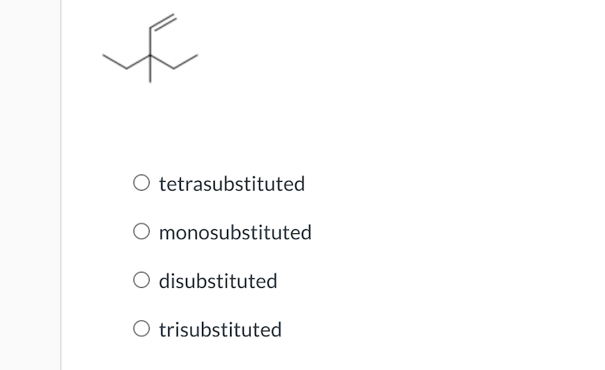

Problem Set 23
Overview image below (we’ll add steps next).

Problem 1 — Statement
All parts of the prompt (pages 1–5).





Overview image below (we’ll add steps next).
All parts of the prompt (pages 1–5).